Code
packages <- c(
"tidyverse",
"vars",
"urca",
"tseries",
"lmtest",
"tsDyn",
"ggplot2",
"patchwork",
"modelsummary"
)

Time-series causal models form the foundational layer of temporal causal inference for settings where a single unit — a country, a market, a patient, an ecosystem — is observed over many periods. Unlike cross-sectional methods that compare units at a single point in time, these models exploit the temporal ordering of variables to assess whether past values of one series help predict future values of another, above and beyond the series’ own past. This predictive precedence — formalized as Granger causality — is the workhorse concept connecting dynamic regression to causal reasoning in macroeconomics, finance, epidemiology, and environmental science.
This chapter covers four interconnected models. Vector Autoregression (VAR) generalizes univariate autoregression to a system of equations, capturing linear dynamic interdependencies among multiple time series. Granger causality tests derived from VAR provide a formal statistical framework for asking whether \(X\) Granger-causes \(Y\). Structural VAR (SVAR) imposes economic or domain-theory restrictions to recover causally interpretable structural shocks and impulse response functions (IRFs). Finally, Error Correction Models (ECM) address the special case of cointegrated — that is, long-run equilibrium-linked — non-stationary series, separating short-run dynamics from long-run adjustment.
A VAR model of order \(p\) — written VAR(\(p\)) — jointly models \(K\) time series as a linear function of their own and each other’s past \(p\) values:
\[ \mathbf{Y}_t = \mathbf{c} + \mathbf{A}_1 \mathbf{Y}_{t-1} + \mathbf{A}_2 \mathbf{Y}_{t-2} + \cdots + \mathbf{A}_p \mathbf{Y}_{t-p} + \boldsymbol{\varepsilon}_t \]
where:
Key outputs from a VAR:
| Output | Description | Causal Interpretation |
|---|---|---|
| Granger causality F-test | Does \(X\) improve prediction of \(Y\) beyond \(Y\)’s own past? | Predictive precedence |
| Impulse Response Function (IRF) | How does \(Y\) respond to a shock in \(X\) over time? | Dynamic causal pathway |
| Forecast Error Variance Decomposition (FEVD) | What fraction of \(Y\)’s forecast error variance is attributable to \(X\)? | Relative causal contribution |
\(X\) Granger-causes \(Y\) if past values of \(X\) contain information that helps predict \(Y\) beyond what \(Y\)’s own past provides:
\[ \text{Restricted:} \quad y_t = \alpha + \sum_{j=1}^p \beta_j y_{t-j} + \varepsilon_t \]
\[ \text{Unrestricted:} \quad y_t = \alpha + \sum_{j=1}^p \beta_j y_{t-j} + \sum_{j=1}^p \gamma_j x_{t-j} + \varepsilon_t \]
Null hypothesis: \(H_0: \gamma_1 = \gamma_2 = \cdots = \gamma_p = 0\) (X does NOT Granger-cause Y).
The F-test (or \(\chi^2\) Wald test) compares the restricted and unrestricted models. Rejection means \(X\) adds predictive content for \(Y\) beyond \(Y\)’s own history.
Granger causality tests whether \(X\) predicts \(Y\) — not whether \(X\) causes \(Y\) in the structural sense. A spurious common driver \(Z\) can induce Granger causality from \(X\) to \(Y\) without any direct causal link. Structural identification (via SVAR or theory-based restrictions) is required for causal claims.
The reduced-form VAR \(\mathbf{A}_0 \mathbf{Y}_t = \mathbf{c} + \mathbf{A}_1^* \mathbf{Y}_{t-1} + \cdots + \mathbf{u}_t\) contains structural shocks \(\mathbf{u}_t\) that are interpretable as causal innovations (demand shock, supply shock, monetary policy shock). Identification requires imposing \(K(K-1)/2\) restrictions on \(\mathbf{A}_0\):
Impulse response function at horizon \(h\): \(\text{IRF}(h) = \frac{\partial \mathbf{Y}_{t+h}}{\partial u_{j,t}}\) — the response of all variables to a unit shock in structural shock \(j\) at time \(t\).
When two I(1) (non-stationary, integrated of order 1) series share a long-run equilibrium, they are cointegrated. The Engle-Granger representation theorem states that a cointegrated system must have an error correction representation:
\[ \Delta y_t = \alpha_1 (y_{t-1} - \beta x_{t-1}) + \sum_{j=1}^{p-1} \Gamma_{1j} \Delta y_{t-j} + \sum_{j=1}^{p-1} \Gamma_{2j} \Delta x_{t-j} + \varepsilon_t \]
where:
Testing for cointegration:
| Test | Null hypothesis | R function |
|---|---|---|
| Engle-Granger two-step | No cointegration |
po.test() in tseries
|
| Johansen trace/max | \(r\) cointegrating vectors |
ca.jo() in urca
|
| Phillips-Ouliaris | No cointegration |
po.test() in tseries
|
| Scenario | Recommended Model | Key Assumption |
|---|---|---|
| All series stationary I(0) | VAR in levels | Stationarity |
| All series I(1), not cointegrated | VAR in first differences | No spurious regression |
| Series I(1) and cointegrated | VECM (ECM) | Long-run equilibrium exists |
| Need structural causal identification | SVAR | Theory-based restrictions |
| Pairwise predictive causality | Bivariate Granger test | No omitted third variable |
This section provides a complete production-ready workflow: simulated data for pedagogical clarity, followed by a real-world macroeconomic application.
packages <- c(
"tidyverse",
"vars",
"urca",
"tseries",
"lmtest",
"tsDyn",
"ggplot2",
"patchwork",
"modelsummary"
)#| warning: false
#| error: false
# Install missing packages
new_packages <- packages[!(packages %in% installed.packages()[,"Package"])]
if(length(new_packages)) install.packages(new_packages)invisible(lapply(packages, function(pkg) {
suppressPackageStartupMessages(library(pkg, character.only = TRUE))
}))cat("Successfully loaded packages:\n")Successfully loaded packages: [1] "package:modelsummary" "package:patchwork" "package:tsDyn"
[4] "package:tseries" "package:vars" "package:lmtest"
[7] "package:urca" "package:strucchange" "package:sandwich"
[10] "package:zoo" "package:MASS" "package:lubridate"
[13] "package:forcats" "package:stringr" "package:dplyr"
[16] "package:purrr" "package:readr" "package:tidyr"
[19] "package:tibble" "package:ggplot2" "package:tidyverse"
[22] "package:stats" "package:graphics" "package:grDevices"
[25] "package:utils" "package:datasets" "package:methods"
[28] "package:base" We simulate a two-variable system where \(X\) Granger-causes \(Y\) but \(Y\) does not Granger-cause \(X\). This allows us to verify that the Granger test recovers the known data-generating structure.
# True DGP: X -> Y (one-way Granger causality)
# X(t) = 0.6*X(t-1) + e_x(t)
# Y(t) = 0.4*Y(t-1) + 0.5*X(t-1) + e_y(t)
T <- 300 # time periods
# Initialize
x <- numeric(T)
y <- numeric(T)
x[1] <- rnorm(1, sd = 2)
y[1] <- rnorm(1, sd = 2)
# Generate the series
for(t in 2:T) {
x[t] <- 0.6 * x[t-1] + rnorm(1, sd = 1)
y[t] <- 0.4 * y[t-1] + 0.5 * x[t-1] + rnorm(1, sd = 1)
}
# Combine into data frame
ts_df <- tibble(
t = 1:T,
X = x,
Y = y
)
cat("Simulated series summary:\n")Simulated series summary: X Y
Min. :-3.74333 Min. :-3.4008
1st Qu.:-0.86023 1st Qu.:-0.7323
Median : 0.06528 Median : 0.2111
Mean : 0.05171 Mean : 0.2137
3rd Qu.: 0.99256 3rd Qu.: 1.1672
Max. : 3.48382 Max. : 5.3746 p1 <- ggplot(ts_df, aes(x = t, y = X)) +
geom_line(color = "steelblue", linewidth = 0.8) +
labs(title = "Simulated Series X", x = "Time", y = "X(t)") +
theme_minimal(base_size = 13)
p2 <- ggplot(ts_df, aes(x = t, y = Y)) +
geom_line(color = "firebrick", linewidth = 0.8) +
labs(title = "Simulated Series Y (driven by X)", x = "Time", y = "Y(t)") +
theme_minimal(base_size = 13)
p1 + p2 + plot_layout(ncol = 2)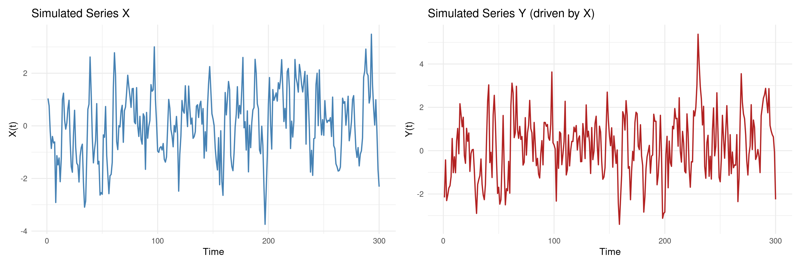
Before fitting a VAR, confirm that both series are stationary. Non-stationary series require differencing or a VECM framework.
# Augmented Dickey-Fuller test for each series
adf_x <- adf.test(ts_df$X, k = 2)
adf_y <- adf.test(ts_df$Y, k = 2)
cat("=== ADF Test Results ===\n")=== ADF Test Results ===X: ADF statistic = -7.8614, p-value = 0.0100 → StationaryY: ADF statistic = -7.6934, p-value = 0.0100 → Stationary=== Lag Order Selection Criteria ===print(lag_select$criteria) 1 2 3 4 5 6
AIC(n) 0.01498072 0.03616040 0.04656852 0.0680822 0.08530061 0.07570618
HQ(n) 0.04524289 0.08659736 0.11718026 0.1588687 0.19626191 0.20684227
SC(n) 0.09053045 0.16207663 0.22285124 0.2947314 0.36231631 0.40308837
FPE(n) 1.01509496 1.03682908 1.04768912 1.0704951 1.08912209 1.07877267
7 8
AIC(n) 0.09605068 0.1109159
HQ(n) 0.24736155 0.2824016
SC(n) 0.47379936 0.5390311
FPE(n) 1.10101415 1.1175956
Selected lag (AIC): 1Selected lag (BIC): 1# Fit VAR with AIC-selected lag order
p_opt <- lag_select$selection["AIC(n)"]
var_fit <- VAR(ts_mat, p = p_opt, type = "const")
cat("=== VAR Model Summary ===\n")=== VAR Model Summary ===summary(var_fit)
VAR Estimation Results:
=========================
Endogenous variables: X, Y
Deterministic variables: const
Sample size: 299
Log Likelihood: -847.887
Roots of the characteristic polynomial:
0.5357 0.5357
Call:
VAR(y = ts_mat, p = p_opt, type = "const")
Estimation results for equation X:
==================================
X = X.l1 + Y.l1 + const
Estimate Std. Error t value Pr(>|t|)
X.l1 0.67873 0.04807 14.119 <0.0000000000000002 ***
Y.l1 -0.07145 0.04346 -1.644 0.101
const 0.02380 0.05782 0.412 0.681
---
Signif. codes: 0 '***' 0.001 '**' 0.01 '*' 0.05 '.' 0.1 ' ' 1
Residual standard error: 0.9878 on 296 degrees of freedom
Multiple R-Squared: 0.4219, Adjusted R-squared: 0.418
F-statistic: 108 on 2 and 296 DF, p-value: < 0.00000000000000022
Estimation results for equation Y:
==================================
Y = X.l1 + Y.l1 + const
Estimate Std. Error t value Pr(>|t|)
X.l1 0.52174 0.04971 10.495 < 0.0000000000000002 ***
Y.l1 0.36785 0.04494 8.185 0.00000000000000815 ***
const 0.10888 0.05980 1.821 0.0696 .
---
Signif. codes: 0 '***' 0.001 '**' 0.01 '*' 0.05 '.' 0.1 ' ' 1
Residual standard error: 1.022 on 296 degrees of freedom
Multiple R-Squared: 0.4904, Adjusted R-squared: 0.487
F-statistic: 142.4 on 2 and 296 DF, p-value: < 0.00000000000000022
Covariance matrix of residuals:
X Y
X 0.97579 0.04779
Y 0.04779 1.04357
Correlation matrix of residuals:
X Y
X 1.00000 0.04736
Y 0.04736 1.00000# Test X -> Y (does X Granger-cause Y?)
gc_x_to_y <- causality(var_fit, cause = "X")
# Test Y -> X (does Y Granger-cause X?)
gc_y_to_x <- causality(var_fit, cause = "Y")
cat("=== Granger Causality Tests ===\n\n")=== Granger Causality Tests ===cat("H0: X does NOT Granger-cause Y\n")H0: X does NOT Granger-cause Y F-statistic: 110.1401, df: (1, 592), p-value: 0.0000 → REJECT H0 (X Granger-causes Y)cat("\nH0: Y does NOT Granger-cause X\n")
H0: Y does NOT Granger-cause X F-statistic: 2.7031, df: (1, 592), p-value: 0.1007 → FAIL TO REJECTcat("\nConclusion: X → Y (one-way causality recovered as specified in DGP)\n")
Conclusion: X → Y (one-way causality recovered as specified in DGP)The IRF traces the dynamic response of each variable to a one-unit shock in \(X\) or \(Y\) over 12 periods.
# Compute IRFs with bootstrapped confidence intervals
irf_x_to_y <- irf(var_fit, impulse = "X", response = "Y",
n.ahead = 12, boot = TRUE, ci = 0.95, runs = 200)
irf_y_to_x <- irf(var_fit, impulse = "Y", response = "X",
n.ahead = 12, boot = TRUE, ci = 0.95, runs = 200)
# Plot
par(mfrow = c(1, 2))
plot(irf_x_to_y, main = "IRF: Shock to X → Response of Y")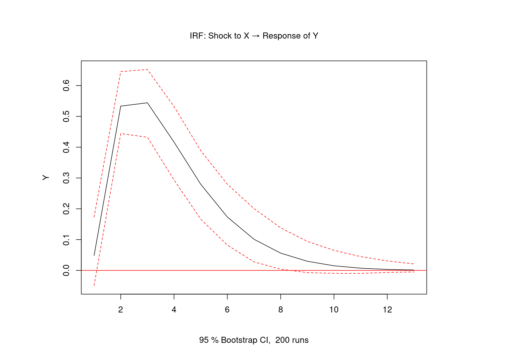
plot(irf_y_to_x, main = "IRF: Shock to Y → Response of X")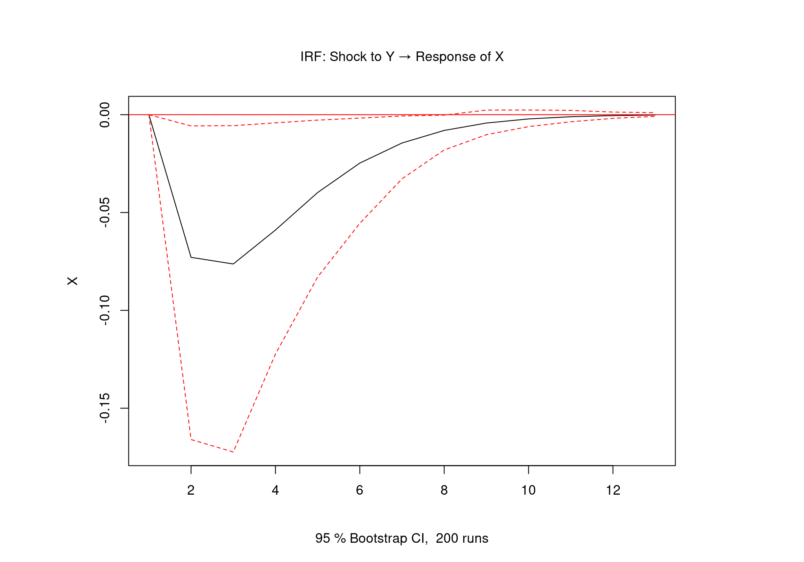
FEVD quantifies how much of the forecast error variance of \(Y\) is attributable to shocks in \(X\) vs. \(Y\)’s own past.
fevd_result <- fevd(var_fit, n.ahead = 12)
# Plot FEVD for Y
plot(fevd_result, addbars = 10)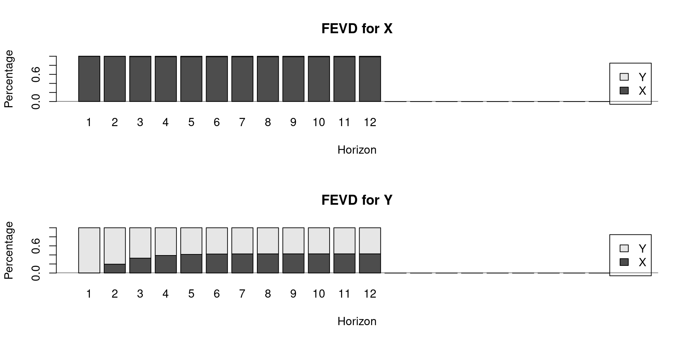
We impose a Choleski (recursive) ordering: \(X\) is ordered first, meaning \(X\) has no contemporaneous effect on \(Y\) but \(Y\) can have a contemporaneous effect on \(X\). This reflects a structural assumption: \(X\) is pre-determined relative to \(Y\) within each period.
# Identify SVAR via Choleski decomposition
# A matrix: lower-triangular (contemporaneous relationships)
# B matrix: diagonal (structural shock variances)
amat <- diag(2)
amat[2, 1] <- NA # Y responds contemporaneously to X (free parameter)
bmat <- diag(2)
diag(bmat) <- NA # Free diagonal (structural shock SDs)
svar_fit <- SVAR(var_fit, estmethod = "scoring",
Amat = amat, Bmat = bmat,
max.iter = 500, conv.crit = 1e-6)
cat("=== SVAR Identification: A Matrix ===\n")=== SVAR Identification: A Matrix ===print(svar_fit$A) X Y
X 1.00000000 0
Y -0.04897333 1cat("\n=== SVAR Identification: B Matrix ===\n")
=== SVAR Identification: B Matrix ===print(svar_fit$B) X Y
X 0.9878196 0.000000
Y 0.0000000 1.020409We simulate two I(1) series that share a long-run equilibrium: $y_t - 0.8 x_t = $ stationary process.
T2 <- 300
# Shared stochastic trend (random walk)
shared_trend <- cumsum(rnorm(T2, sd = 1))
# X: random walk + noise
x2 <- shared_trend + rnorm(T2, sd = 0.5)
# Y: cointegrated with X (long-run: Y = 0.8*X + stationary part)
ecm_term <- numeric(T2)
ecm_term[1] <- 0
for(t in 2:T2) {
ecm_term[t] <- -0.4 * ecm_term[t-1] + rnorm(1, sd = 0.3) # stationary AR(1)
}
y2 <- 0.8 * x2 + ecm_term
coint_df <- tibble(t = 1:T2, X = x2, Y = y2)
cat("Correlation between X and Y:", round(cor(x2, y2), 3), "\n")Correlation between X and Y: 0.997 cat("Long-run equilibrium deviation (Y - 0.8X):\n")Long-run equilibrium deviation (Y - 0.8X): Min. 1st Qu. Median Mean 3rd Qu. Max.
-0.86169 -0.23942 -0.02517 -0.01365 0.19933 0.93425 === Unit Root Tests ===X levels: p = 0.7049 I(1) — non-stationaryY levels: p = 0.6978 I(1) — non-stationaryΔX (1st diff): p = 0.0100 Stationary after differencing → confirmed I(1)ΔY (1st diff): p = 0.0100 Stationary after differencing → confirmed I(1)
######################
# Johansen-Procedure #
######################
Test type: trace statistic , without linear trend and constant in cointegration
Eigenvalues (lambda):
[1] 0.40654413627152008459120224870275706052780151367187500000000000000000000000000000000000000000000000000000000000000000000000000000000000000000000000000000000000000000000000000000000000000000000000000000000000000000000000000000000000000000000000000000000000000000000000000000000000000000000000000000000000000000000000
[2] 0.01043139380137762285694069674946149461902678012847900390625000000000000000000000000000000000000000000000000000000000000000000000000000000000000000000000000000000000000000000000000000000000000000000000000000000000000000000000000000000000000000000000000000000000000000000000000000000000000000000000000000000000000000
[3] -0.00000000000000000000000000000000000000000000000000000000000000000000000000000000000000000000000000000000000000000000000000000000000000000000000000000000000000000000000000000000000000000000000000000000000000000000000000000000000000000000000000000000000000000000000000000000000000000000000000000000000000000002391186
Values of teststatistic and critical values of test:
test 10pct 5pct 1pct
r <= 1 | 3.12 7.52 9.24 12.97
r = 0 | 158.62 17.85 19.96 24.60
Eigenvectors, normalised to first column:
(These are the cointegration relations)
X.l2 Y.l2 constant
X.l2 1.00000000 1.0000000 1.0000000
Y.l2 -1.25349798 0.2046167 -0.5198922
constant -0.02976839 7.9546602 -6.3024823
Weights W:
(This is the loading matrix)
X.l2 Y.l2 constant
X.d -0.1302245 -0.01863731 0.000000000000000006011595
Y.d 0.9879879 -0.01501967 -0.000000000000000097166524# Estimate VECM (1 cointegrating vector, 2 lags)
vecm_fit <- cajorls(jo_test, r = 1)
cat("=== VECM Estimation Results ===\n")=== VECM Estimation Results ===cat("\nCointegrating vector (beta):\n")
Cointegrating vector (beta):print(jo_test@V[, 1]) X.l2 Y.l2 constant
1.00000000 -1.25349798 -0.02976839 cat("\nAdjustment coefficients (alpha — speed of adjustment):\n")
Adjustment coefficients (alpha — speed of adjustment):print(jo_test@W[, 1]) X.d Y.d
-0.1302245 0.9879879 cat("\nInterpretation: alpha < 0 for Y confirms Y corrects toward equilibrium.\n")
Interpretation: alpha < 0 for Y confirms Y corrects toward equilibrium.# Plot the cointegrating residual (error correction term)
ect <- y2 - 0.8 * x2 # Long-run equilibrium deviation
ect_df <- tibble(t = 1:T2, ECT = ect)
p_ect <- ggplot(ect_df, aes(x = t, y = ECT)) +
geom_line(color = "darkgreen", linewidth = 0.8) +
geom_hline(yintercept = 0, linetype = "dashed", color = "red") +
labs(
title = "Error Correction Term: Y - 0.8X",
subtitle = "Stationary series confirms cointegration",
x = "Time", y = "Y - 0.8X"
) +
theme_minimal(base_size = 13)
# Plot the two cointegrated series
series_df <- coint_df %>%
pivot_longer(cols = c(X, Y), names_to = "Series", values_to = "Value")
p_series <- ggplot(series_df, aes(x = t, y = Value, color = Series)) +
geom_line(linewidth = 0.8, alpha = 0.85) +
labs(title = "Cointegrated Series X and Y",
subtitle = "Share a common stochastic trend",
x = "Time", y = "Value") +
scale_color_manual(values = c("X" = "steelblue", "Y" = "firebrick")) +
theme_minimal(base_size = 13) +
theme(legend.position = "bottom")
p_series + p_ect + plot_layout(ncol = 2)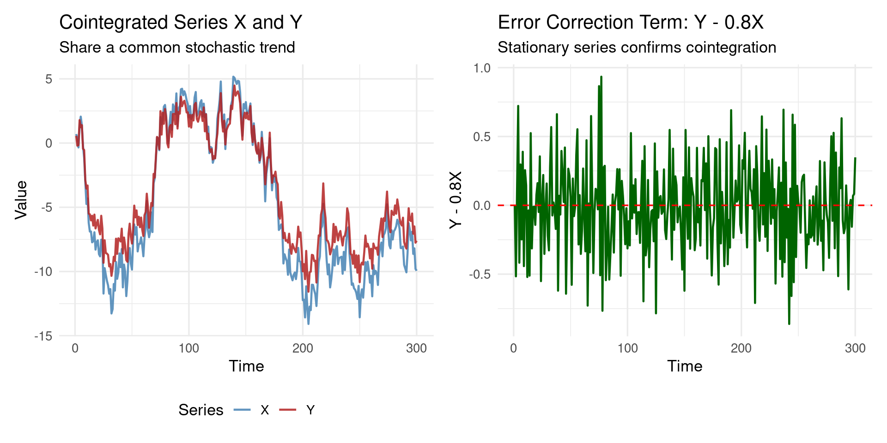
We apply VAR and Granger causality to US quarterly macroeconomic data from the vars package (Canada dataset), examining dynamic relationships among output, employment, the real wage, and productivity.
Dataset dimensions: 84 4 Variables: e prod rw U Date range: 1980 to 2000.75 # Variable descriptions
cat("Variable descriptions:\n")Variable descriptions:cat(" e : Employment (log)\n") e : Employment (log)cat(" prod: Labour productivity (log)\n") prod: Labour productivity (log)cat(" rw : Real wage (log)\n") rw : Real wage (log)cat(" U : Unemployment rate\n") U : Unemployment rate=== ADF p-values (H0: non-stationary) === e prod rw U
0.5152 0.2180 0.5530 0.3303 cat("Note: Variables in levels may be I(1); differentiate if needed.\n\n")Note: Variables in levels may be I(1); differentiate if needed.Using first-differenced series for VAR estimation.# Lag selection
lag_can <- VARselect(Canada_diff, lag.max = 6, type = "const")
cat("\n=== Lag Order Selection (differenced data) ===\n")
=== Lag Order Selection (differenced data) === 1 2 3 4 5 6
AIC(n) -5.989305 -6.074049 -5.838457 -5.864627 -5.645732 -5.397453
SC(n) -5.380524 -4.978244 -4.255627 -3.794772 -3.088853 -2.353550Selected lag (AIC): 2# Fit VAR
var_canada <- VAR(Canada_diff, p = p_can, type = "const")
cat("=== VAR Fit: Canada Labour Market ===\n")=== VAR Fit: Canada Labour Market ===Observations: 81, Variables: 4, Lags: 2# Granger causality: does productivity Granger-cause wages?
gc_prod_rw <- causality(var_canada, cause = "prod")
gc_rw_prod <- causality(var_canada, cause = "rw")
cat("\n=== Granger Causality: Productivity ↔ Real Wages ===\n")
=== Granger Causality: Productivity ↔ Real Wages ===prod → rw: F = 3.392, p = 0.0030 → Significantrw → prod: F = 2.920, p = 0.0088 → Significantirf_prod_rw <- irf(var_canada, impulse = "prod", response = "rw",
n.ahead = 12, boot = TRUE, ci = 0.95, runs = 300)
plot(irf_prod_rw,
main = "IRF: Shock to Productivity → Response of Real Wages",
ylab = "Response (log real wage, differenced)")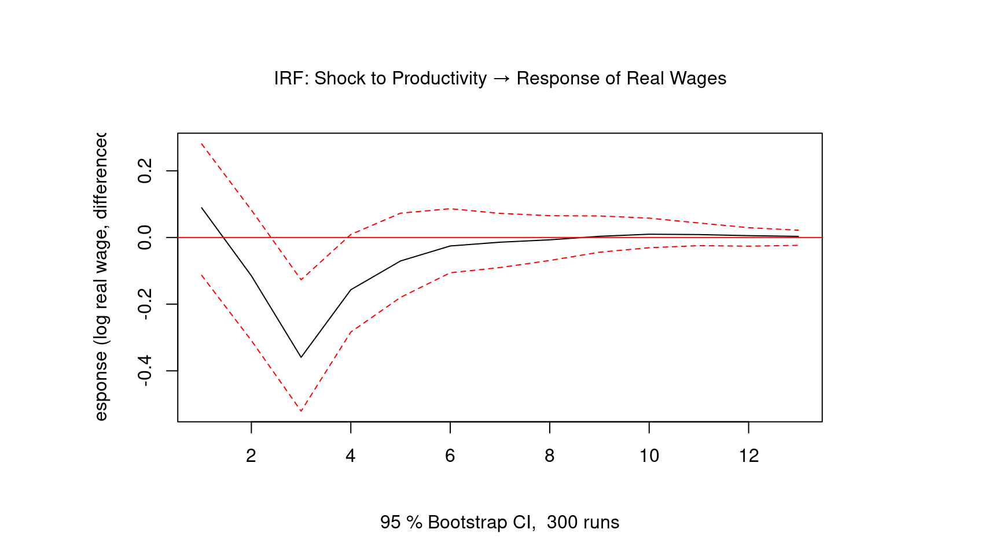
fevd_canada <- fevd(var_canada, n.ahead = 12)
cat("=== FEVD for Real Wages (rw) at horizon 1, 4, 8, 12 ===\n")=== FEVD for Real Wages (rw) at horizon 1, 4, 8, 12 === e prod rw U
[1,] 0.001 0.010 0.989 0.000
[2,] 0.023 0.161 0.795 0.022
[3,] 0.055 0.154 0.768 0.023
[4,] 0.057 0.154 0.767 0.023plot(fevd_canada, plot.type = "single",
main = "FEVD: Forecast Error Variance Decomposition (All Variables)")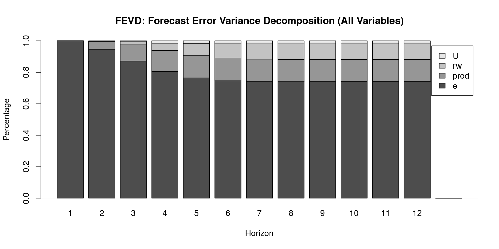
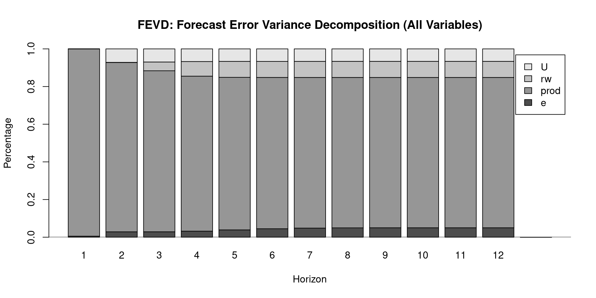
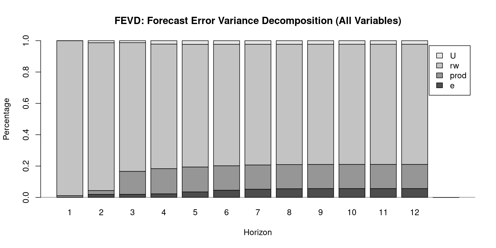
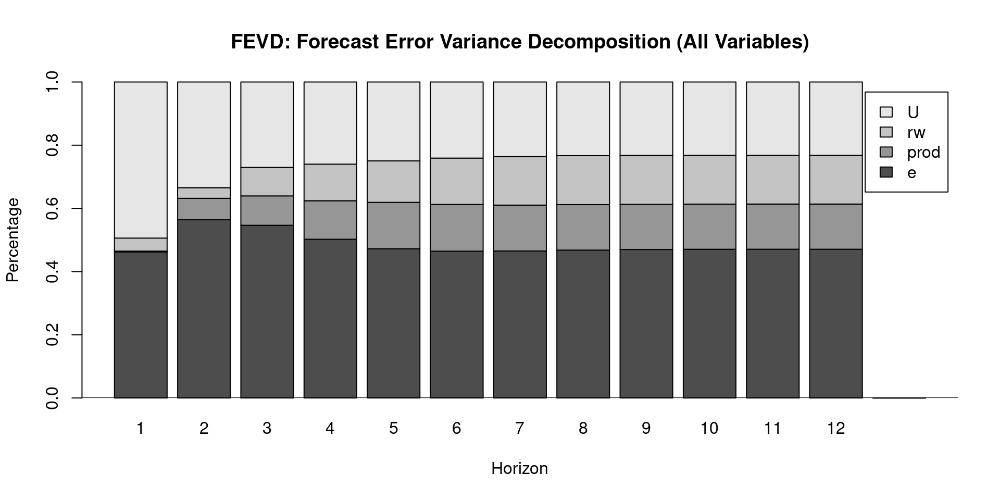
# Serial correlation test (Portmanteau)
portmanteau <- serial.test(var_canada, lags.pt = 12, type = "PT.asymptotic")
cat("=== Portmanteau Serial Correlation Test ===\n")=== Portmanteau Serial Correlation Test ===print(portmanteau)
Portmanteau Test (asymptotic)
data: Residuals of VAR object var_canada
Chi-squared = 123.2, df = 160, p-value = 0.9862$serial
Portmanteau Test (asymptotic)
data: Residuals of VAR object var_canada
Chi-squared = 123.2, df = 160, p-value = 0.9862# Stability check (characteristic roots should be < 1)
roots <- roots(var_canada, modulus = TRUE)
cat("\n=== Characteristic Roots (should all be < 1 for stability) ===\n")
=== Characteristic Roots (should all be < 1 for stability) ===Max root: 0.6801 All roots < 1: TRUE plot(stability(var_canada), nc = 2)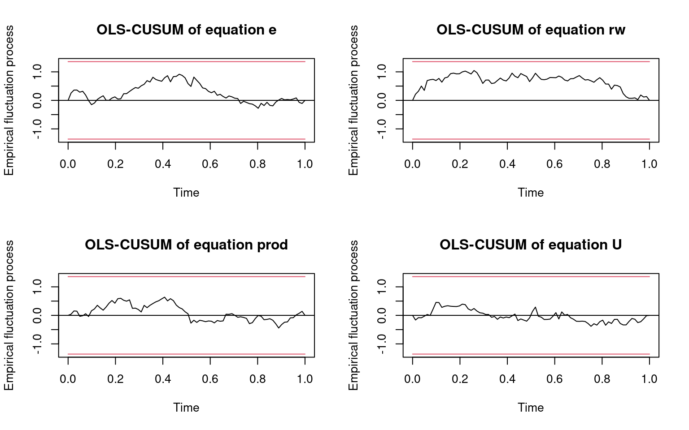
This chapter covered the foundational toolkit for time-series causal inference: VAR, Granger causality, SVAR, and ECM. Key takeaways include:
On VAR and Granger Causality. The VAR(\(p\)) model characterizes linear dynamic interdependencies among \(K\) stationary time series. Granger causality tests — derived from F-tests on lagged coefficients — provide a formal framework for predictive precedence. They are necessary but not sufficient for structural causation: a common omitted driver can generate Granger causality without a direct causal link.
On Structural VAR. Reduced-form VAR residuals are correlated across equations; causal interpretation requires structural identification. The Choleski decomposition imposes a causal ordering based on theory, recovering structurally interpretable IRFs. The ordering must be justified — different orderings yield different IRFs.
On Cointegration and ECM. When series are I(1) and cointegrated, differencing discards long-run information. The VECM combines short-run dynamics (in differences) with long-run equilibrium correction. The speed-of-adjustment parameter \(\alpha\) quantifies how rapidly deviations from long-run equilibrium are corrected each period.
On Diagnostics. Every VAR should be validated with serial correlation tests (Portmanteau), stability checks (characteristic roots \(< 1\)), and normality tests on residuals. Granger causality results depend heavily on correct lag order selection — use AIC/BIC, not arbitrary choices.
| Resource | Description |
|---|---|
vars package vignette |
Pfaff (2008) — comprehensive VAR/VECM guide with R code |
| Lütkepohl (2005) | New Introduction to Multiple Time Series Analysis — definitive reference |
| Sims (1980) | Econometrica — original VAR paper |
| Engle & Granger (1987) | Econometrica — cointegration and ECM |
| Johansen (1991) | Econometrica — maximum likelihood cointegration |
| Granger (1969) | Econometrica — original Granger causality paper |
urca package |
Pfaff — unit root and cointegration tests |